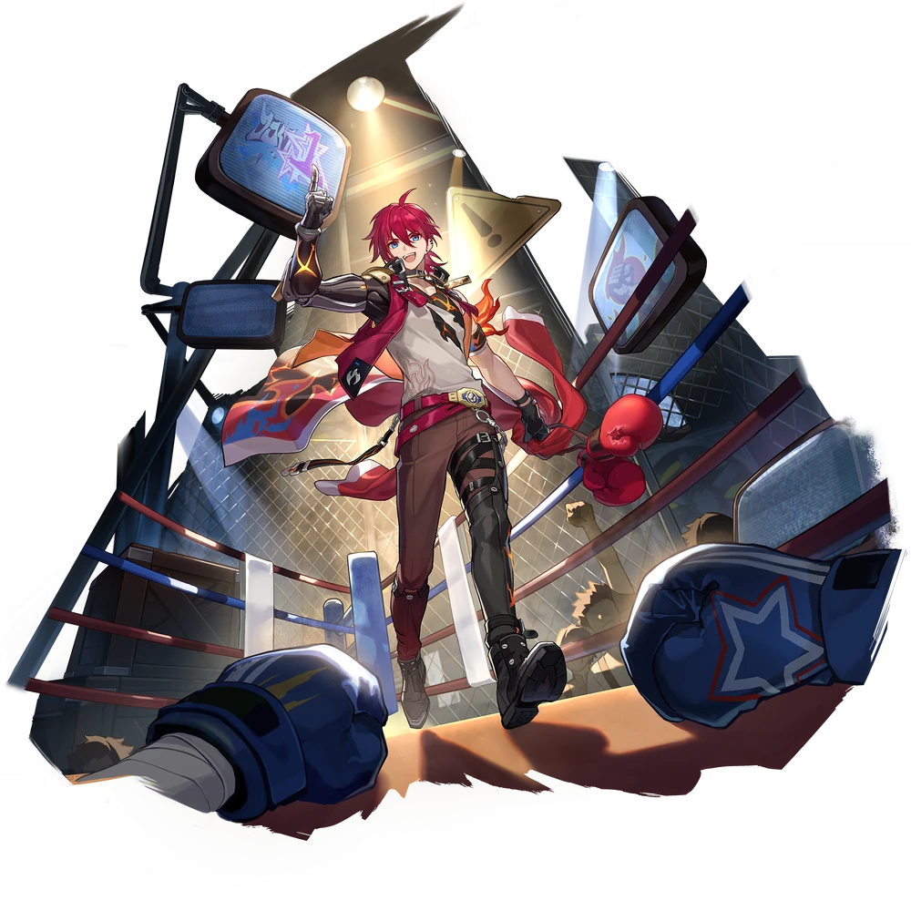

| Nome | Luka |
|---|---|
| Elemento | Físico | Raridade | ✦ ✦ ✦ ✦ |
| Caminho | A Inexistencia |
| Sexo | Masculino |
| Especie | Humano |
| Facção | Belobog (no perfil)- Fogo-vivo- As toupeiras | Mundo | Jarilo-VI | Como obter | Qualquer Warp Banner (exceto Departure Warp ) | Data de Lançamento | 2023-08-09 | Adicionado pela primeira vez | Versão 1.0 Luka foi apresentado como um personagem mencionado. |
Ascensões e estatísticas
| Fase de Ascensão | Level | Base HP | Base ATK | Base DEF | Base SPD |
|---|---|---|---|---|---|
| 0✦ | 1/20 | 124 | 79 | 66 | 103 |
| 20/20 | 243 | 154 | 128 | 103 | |
| 1✦ | 20/30 | 293 | 186 | 155 | 103 |
| 30/30 | 355 | 225 | 188 | 103 | |
| 2✦ | 30/40 | 405 | 257 | 214 | 103 |
| 40/40 | 468 | 297 | 247 | 103 | |
| 3✦ | 40/50 | 517 | 328 | 273 | 103 |
| 50/50 | 580 | 368 | 306 | 103 | |
| 4✦ | 50/60 | 630 | 399 | 333 | 103 |
| 60/60 | 692 | 439 | 366 | 103 | |
| 5✦ | 60/70 | 742 | 471 | 392 | 103 |
| 70/70 | 804 | 510 | 425 | 103 | |
| 6✦ | 70/80 | 854 | 542 | 452 | 103 |
| 80/80 | 917 | 582 | 485 | 103 |
| Nível | Custo de Evolução | Materiais de Ascensão do Personagem | Materiais Necessários |
|---|---|---|---|
| 0 → 1 ✦ |  3,200 3,200 |
 4 4 |
|
| 1 → 2 ✦ | 6,400 |
8 |
|
| 2 → 3 ✦ | 12,800 |
 2 2 |
 5 5 |
| 3 → 4 ✦ | 32,000 |
5 |
8 |
| 4 → 5 ✦ | 64,400 |
15 |
 5 5 |
| 5 → 6 ✦ | 128,000 |
28 |
7 |
Habilidades de combate
| Icone | Tipo | Nome | Descrição | Marcação | Energia | Resistência DMG |
|---|---|---|---|---|---|---|
| ATK básico | Soco Direto | Causa DMG Físico igual a 50% –110% do ATK de Luka a um único inimigo. | Alvo único | Geração: 20 | 30 | |
| ATK básico | Punho Destruidor do Céu | Consome 2 pilhas de Vontade de Lutar. Primeiro, usa Direct Punch para causar 3 golpes, com cada golpe causando DMG Físico igual a 10% –22% do ATK de Luka para um único alvo inimigo. Em seguida, usa Rising Uppercut para causar 1 golpe, causando DMG Físico igual a 40% –88% do ATK de Luka ao único alvo inimigo. | Alvo único | Geração: 20 | 60 | |
 |
Skill | Punho dilacerante | Causa DANO Físico igual a 60% –132% do ATK de Luka a um único alvo inimigo. Além disso, há 100% de chance básica de infligir Sangramento neles, com duração de 3 turno(s). Enquanto estiver sangrando, o inimigo consumirá 24% de seu HP máximo como DoT físico no início de cada turno. Este DMG não excederá mais de 130% –371,8% do ATK de Luka. | Alvo único | Geração: 30 | 60 |
| Ultimate | Golpe de Graça | Recebe 2 pilhas de Vontade de Combate, com 100% de chance base de aumentar o DANO recebido de um único alvo inimigo em 12% –21,6% por 3 turno(s). Em seguida, causa DANO Físico igual a 198% –356,4% do ATK de Luka ao alvo. | Alvo único | Custo: 130 Geração: 5 | 90 | |
| Talento | Faíscas Voadoras | Após Luka usar seu ATK básico "Soco Direto" ou Habilidade "Punho Lacerador", ele recebe 1 pilha(s) de Vontade de Luta, até 4 pilhas. Quando ele tem 2 ou mais pilhas de Fighting Will, seu ATK básico "Direct Punch" é aprimorado para "Sky-Shatter Fist". Depois que o "Rising Uppercut" de seu ATK Básico Aprimorado atingir um alvo inimigo com sangramento, o status de sangramento causará imediatamente DMG por 1 vez igual a 68% -88,4% do DMG original ao alvo. No início da batalha, Luka possuirá 1 pilha de Fighting Will. | Melhorar | |||
| Técnica | Antecipador | Ataca imediatamente o inimigo. Ao entrar na batalha, Luka causa DMG Físico igual a 50% de seu ATK a um único inimigo aleatório com 100% de chance básica de infligir o efeito de Sangramento de sua Habilidade no alvo. Então, Luka ganha 1 pilha adicional de Vontade de Combate. | 60 |
Eidolons
| Icone | Nome da habilidade | Nivel | Descrição |
|---|---|---|---|
| Lutando sem parar | 1 | Quando Luka entra em ação, se o inimigo alvo estiver Sangrando, aumenta o DMG causado por Luka em 15% por 2 turno(s). | |
| O inimigo é fraco, eu sou forte | 2 | Se a Habilidade atingir um alvo inimigo com Fraqueza Física, ganhe 1 acúmulo(s) de Vontade de Combate. | |
| Nascido Para o Ringue | 3 | Habilidade Nv. +2, até um máximo de Nv. 15. Talento Nv. +2, até um máximo de Nv. 15. | |
| Nunca voltando atrás | 4 | Para cada acúmulo de Vontade de Luta obtido, aumenta o ATK em 5%, acumulando até 4 vez(es). | |
| O Espírito do Fogo-Vivo | 5 | Nível final. +2, até um máximo de Nv. 15. ATK Básico Nv. +1, até um máximo de Nv. 10. | |
| Aplausos de um campeão | 6 | Depois que o "Rising Uppercut" do ATK Básico Aprimorado atingir um alvo inimigo com Sangramento, o status de Sangramento causará imediatamente DMG 1 vez igual a 8% do DMG original para cada golpe de Soco Direto já liberado durante o ATK Básico Aprimorado atual. |
Traços
| Custo Total (1 → 6 para rastreamento de ATK básico) | ||||||
|---|---|---|---|---|---|---|
| 192.000 |
4 |
5 |
5 |
 2 2 |
 6 6 |
8 |
| Custo total (1 → 10 para um rastreamento) | ||||||||
|---|---|---|---|---|---|---|---|---|
| 522.000 |
6 |
10 |
5 |
2 |
12 |
23 |  3 3 |
 1 1 |